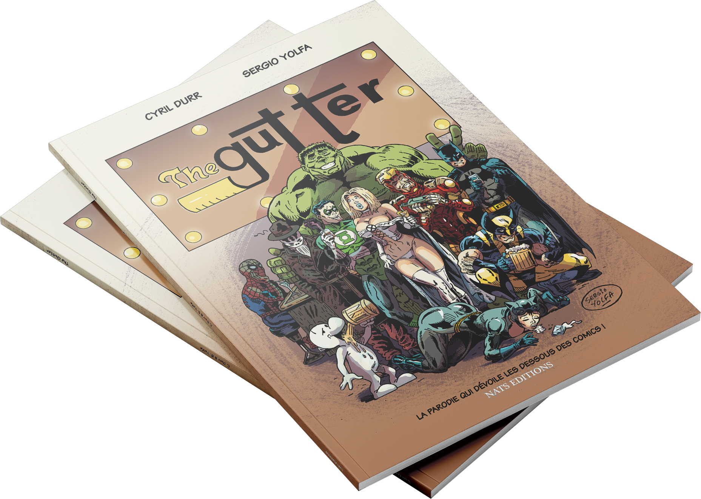

The Gutter (2016)

Lorsque les super-héros ne sont pas occupés à sauver le monde, ils se retrouvent dans un bar, le Gutter, pour se détendre, échanger des anecdotes ou se balancer quelques vannes.
L'alcool aidant, les dérapages sont nombreux...
Un hommage décalé et bourré de références à la bande dessinée américaine.